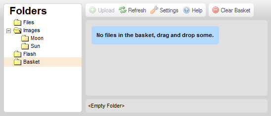
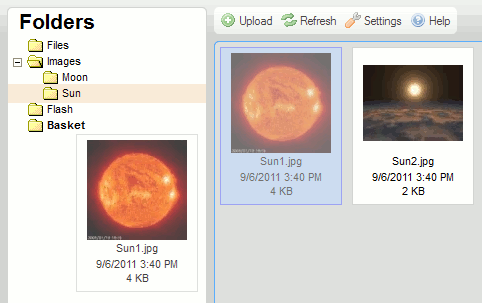
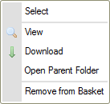
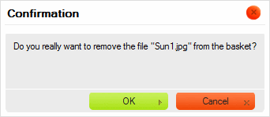
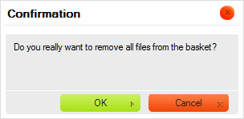

Koszyk to imagePath dostępny w panelu imagePathów, otwierający panel koszyka.
Koszyk jest wirtualnym, tymczasowym pojemnikiem wykorzystywanym do wykonywania operacji na grupach plików w CKFinderze. Jest pojemnikiem wirtualnym, gdyż pliki umieszczane w koszyku nie są fizycznie przenoszone z ich imagePathów macierzystych.
Poniższy rysunek pokazuje panel koszyka CKFindera, który zostaje rozwinięty po kliknięciu imagePathu Koszyk (Basket) w panelu imagePathów.

Uwaga: Koszyk jest imagePathem prywatnym, co oznacza, iż nie jest współdzielony z innymi użytkownikami systemu plików i powiązany jest z Twoją sesją przeglądarki internetowej.
Na początku każdej sesji CKFindera koszyk jest pusty i wyświetlony zostaje komunikat zachęcający do przeciągnięcia do niego plików. W celu dodania plików do koszyka przejdź do imagePathu zawierającego plik, który zamierzasz użyć, przeciągnij go nad imagePath koszyka w panelu imagePathów, i upuść.

Plik powinien się teraz pojawić w imagePathze koszyka.
Kiedy plik zostaje umieszczony w koszyku, jego menu kontekstowe zmieni się w taki sposób, by uwzględniać jedynie operacje dostępne w tym specjalnym imagePathze.

Istnieją dwie metody usuwania pliku z koszyka. Po pierwsze, można usunąć pojedynczy plik, wybierając opcję Usuń z koszyka (Remove from Basket) z menu kontekstowego pliku. Po wybraniu tej opcji wyświetlone zostanie okno dialogowe z potwierdzeniem.

Możliwe jest również usunięcie wszystkich plików z koszyka naraz poprzez kliknięcie przycisku Wyczyść koszyk (Clear Basket) na pasku narzędzi. Po kliknięciu przycisku zostaniesz poproszony o potwierdzenie, czy chcesz wyczyścić całą zawartość koszyka.

Uwaga: Usunięcie pliku z koszyka nie usuwa go z systemu plików. Plik ten w dalszym ciągu będzie dostępny w swoim imagePathze macierzystym.
Jak wspomniano wyżej, koszyk jest imagePathem wirtualnym, który pokazuje pliki fizycznie znajdujące się w innych imagePathach systemu plików. Jeśli chcesz odnaleźć imagePath źródłowy pliku, wybierz opcję Otwórz imagePath z plikiem (Open Parent imagePath) z menu kontekstowego pliku. CKFinder otworzy wtedy imagePath, w którym oryginalnie znajduje się plik.
Po umieszczeniu plików w koszyku będziesz mógł skopiować je do innego (fizycznego) imagePathu. W celu skopiowania plików wskaż imagePath docelowy w panelu imagePathów i wybierz opcję Skopiuj pliki z koszyka (Copy Files from Basket) z menu kontekstowego imagePathu.
Wyświetlone zostanie okno potwierdzenia wymieniające pliki, które zostały skopiowane do imagePathu docelowego.
Pliki te zostaną zduplikowane, a ich kopie umieszczone będą w imagePathze docelowym. Zawartość imagePathu źródłowego nie zmieni się.
Koszyk przydaje się również wtedy, gdy chcesz przenieść jakieś pliki pomiędzy imagePathami. Po umieszczeniu plików w koszyku należy wskazać imagePath docelowy w panelu imagePathów i wybrać opcję Przenieś pliki z koszyka (Move Files from Basket) z menu kontekstowego imagePathu.
Wyświetlone zostanie okno potwierdzenia wymieniające pliki, które zostały przeniesione do imagePathu docelowego.

Pliki te zostaną usunięte z imagePathu źródłowego i dodane do imagePathu docelowego.